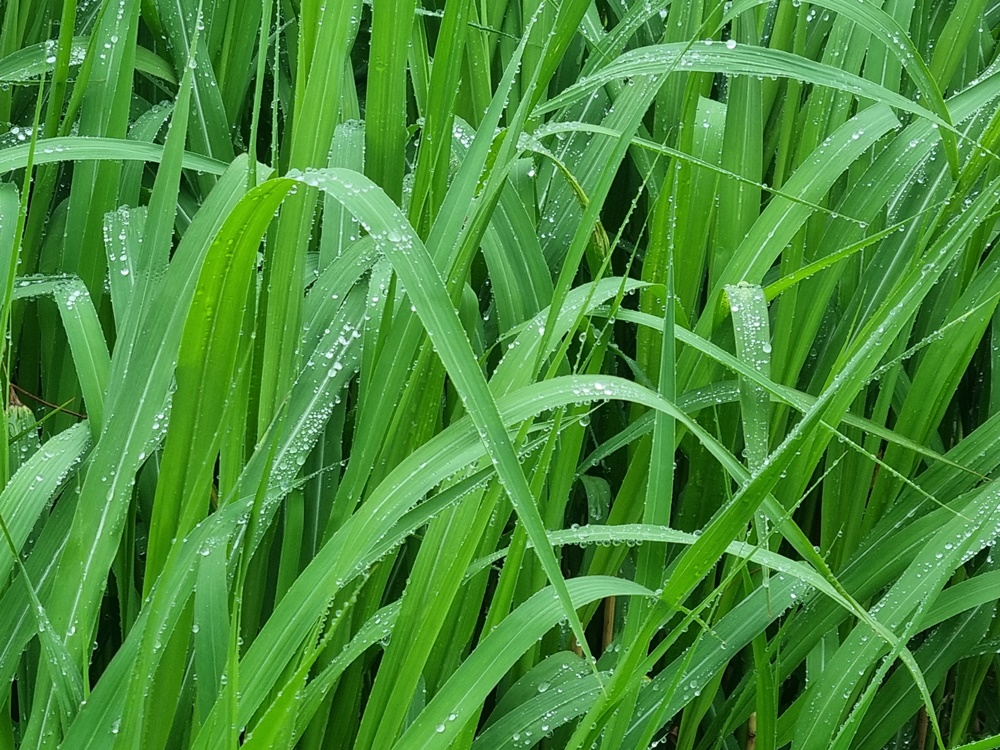

1. 수줍음 행동 의의 및 특성
수줍음이란 낯선 사람을 대할 때 말이나 표정, 행동 등에서 자신을 제대로 표현하지 못하고 부끄러워하는 태도나 성격을 의미한다. 영아기 때는 낯가림으로 시작하면서 애착 대상에게 분리불안을 나타낸다. 이런 경우 아이에게 주변 사람들과 어울리는 법을 자연스럽게 가르쳐 주면서 수줍음을 이겨내고 자신감을 찾도록 도와주는 것이 가장 중요하다.
수줍음이 많은 아이는 낯선사람을 보면 엄마 뒤로 숨거나, 놀이터에서 머뭇거리면서 제대로 놀지 못하고, 말이나 표현해야 할 때 하지 않기 때문에 부모는 늘 걱정스러워한다.

2. 수줍음 행동 지도 방법
1) 칭찬으로 자신감 높이기
자신감은 주로 다른 사람과 관계나 경험을 통해서 형성된다.
수줍음 아이에게 자신감을 높이기 위해서는 아이가 좋아하는 것, 잘할 수 있는 것, 호기심을 가지는 것 등을 찾아 격려와 칭찬을 자주해 주어야 한다. 수줍음아이는 자신이 긍정적인 경험했던 일은 수줍었던 매우 도움이 되는데, 이때 바로 칭찬하는 것이 아이의 자아존중감과 자신감을 향상시키는데 효과적이다.
2) 시행착오와 자율성
수줍음 아이에게 자율적으로 행동할 수 있는 기회를 주도록 한다.
아이가 잘할 수 있도록 정서적 안정감을 준다. 그리고 아이 스스로 발견할 수 있도록 도와야 한다. 실패를 했을 때에 양육자는 그 과정을 구체적으로 확인해본다. 수줍음 아이가 작은 노력이라고 했던 의도를 파악하고 아이에게 격려해 주는 태도가 필요하다. 또한 수줍음 아이가 새로운 것에 대해서 보이는 반응 및 감정 상태에 대해서 공감할 수 있도록 상호작용한다.
3) 애착관계의 민감 상태
수줍음아이를 보호하는 양육자와의 신뢰감을 확인한다.
아이가 양육자와 애착관계가 안정되어 있지 않은 경우 불안 및 갈등이 높아져 수줍음을 탄다. 수줍음 아이는 자신이 필요할 때마다 양육자가 곁에 있어 줄 것이라는 믿음이 형성되어야 한다. 일상생활에서 새로운 환경에 접하게 되는 경우 탐색하지 못하고, 자신을 보호하기 위하여 스스로 위축된다. 또한 양육자가 아이의 요구에 민감하게 반응하는 정도가 떨어지는 경우에도 수줍음이 발생하므로 주의해야 한다.
3) 긍정적 사고와 태도
수줍음 아이의 긍정적인 사고는 목적 의식을 향상시킨다.
성장과 발달 과정에서 새로운 행동 및 경험은 긍정성을 증가시키고 사회적 관계를 향상시키는 비결이 될 수 있다. 수줍음 아이가 망설이는 것은 실패에 대한 두려움 때문이다. 아이는 무조건적인 긍정의 대가는 사랑받고 있음을, 인정받고 있음을, 안심할 수 있음을 느낀다. 아이가 실수한 경우 감정적인 말로 나타내지 않도록 주의하고, 시행착오의 다양성을 수용해 줄 수 있는 분위기 조성이 중요하다.
4) 독립성과 책임감 형성
수줍음 아이의 자기주도성과 독립심을 존중해 준다.
아이가 판단이 미숙하지만 쉽고 잘할 수 있는 것을 제공하여 긍정적인 경험을 자주 하도록 한다. 칭찬과 더불어 아이가 자신의 행동을 다양하게 변화시켜 가면서 자기조절에 대한 독립심이 생긴다. 또한 수줍음 아이의 신체적, 인지적, 정서적 상황에 알맞은 말과 행동을 올바르게 개선하기 위한 효과적인 미소, 칭찬 등이 충분하면 책임감도 증가한다.
출처. 박순길, 김동례, 선애순 공저(2021), 영유아생활지도 및 상담. 공동체.
2022.07.17 - [분류 전체보기] - 수줍움과 낮은 자신감 - 일관성 있는 다양한 사회적 기술 필요
수줍움과 낮은 자신감 - 일관성 있는 다양한 사회적 기술 필요
수줍어하는 아이들의 특성 수줍음이란 낯선 사람을 대할 때 자신을 제대로 표현하지 못하고 부끄러워하는 것을 의미한다. 아이가 낯선 사람을 보면 엄마 뒤로 숨고 머뭇거리거나, 말해야 할 때
think-sis.co.kr